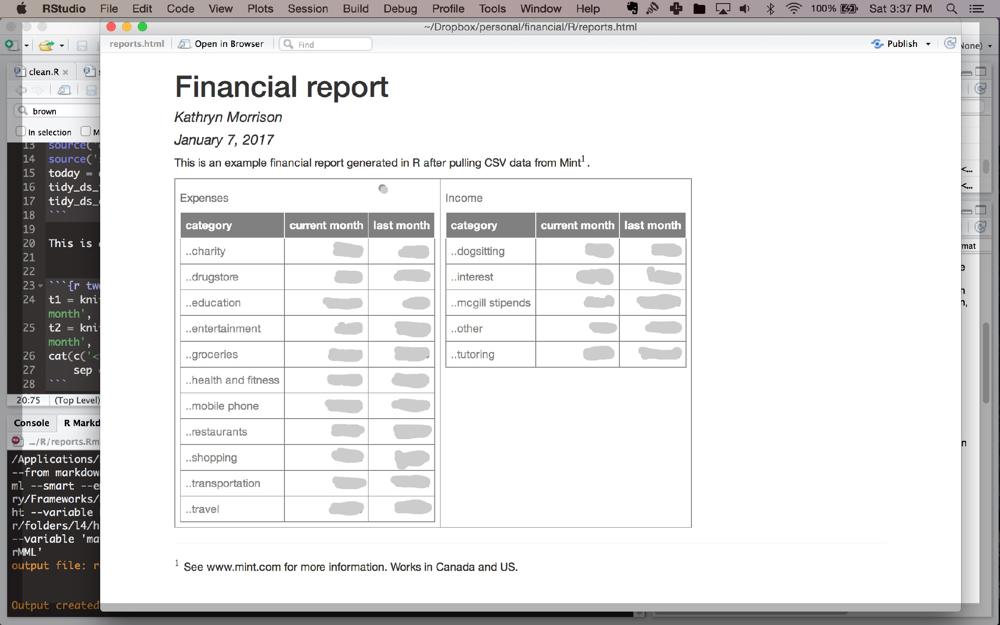

Managing my money using R
07 Jan 2017I was listening to Not So Standard Deviations yesterday, which combines my love of podcasts with my love of data science - highly recommend!. The hosts were talking about possibly doing their taxes and/or managing their finances in R. This is something I’ve been meaning to do for years. I currently use a combination of Mint.com and MS Excel. It’s an awkward, non-automated system. This episode inspired me to finally create a workflow that would save me time and exploit my skillset (I’m much better in R than excel).
My financial situation is pretty simple, but I’m a student and self-employed with income from a variety of sources. I have bank accounts at 3 different places (long story), and a shared credit card with my boyfriend at yet another bank. I use Mint.com, which is great, but I like to categorize my spending and this shared card makes it harder - a lot of manual splitting transactions, or dividing by two in my head while trying to aggregate categories.
So now I’ve got a new workflow. I still am using Mint.com for data aggregation - it brings all of my account information from 4 institutions into one place in the same format (would be worth it just for that!), and also categorizes it pretty well automatically (and is easy to fine-tune manually). Then I export to CSV.
From there I wrote some code that will load and clean the CSV and generate a report with this month and last month spending and income summaries. Here’s a screenshot of an example, but I’ve blurred it out so you can’t see how much I spent on food (I love food).
Next steps: Adding more summaries, including visualizations, and maybe an interactive version using shiny.
Am I then just re-inventing a worse spreadsheet?…I don’t think so, because I am automating most fiddly stuff. Ideally I’d like to remove Mint.com from the equation but it’s too much trouble with all my banks right now. If you only have one bank, downloading the csv from there should work quite well too - but you’ll have to create a database or something similar with which to categorize expenses based on their description (not super complicated though).
Time will tell if I’ve got a lot more work to do before this is efficient, but I have that optimization feeling Hilary Parker described in the podcast, so I’m calling this a tentative win for now!

If you have any questions or comments, please post them below.